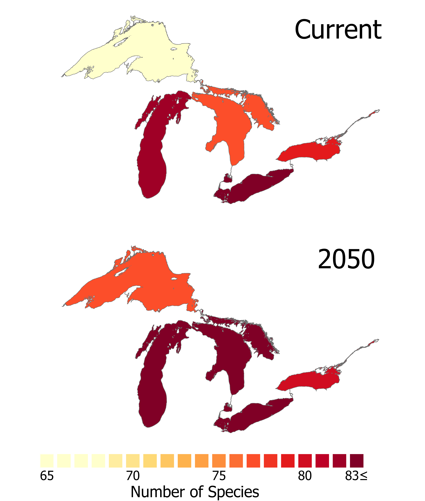
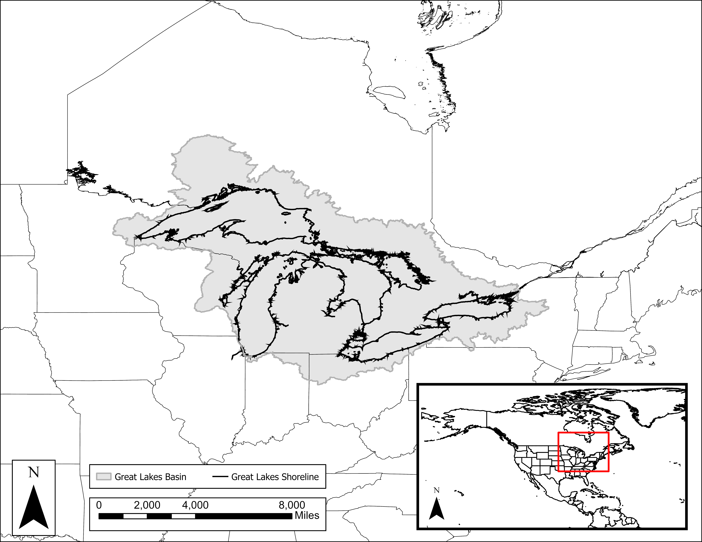
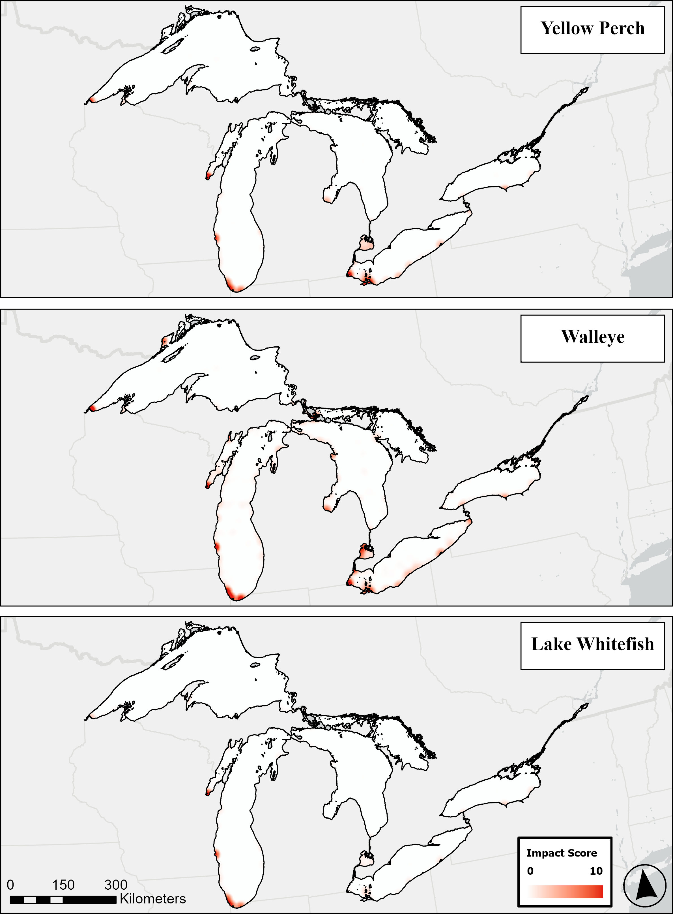
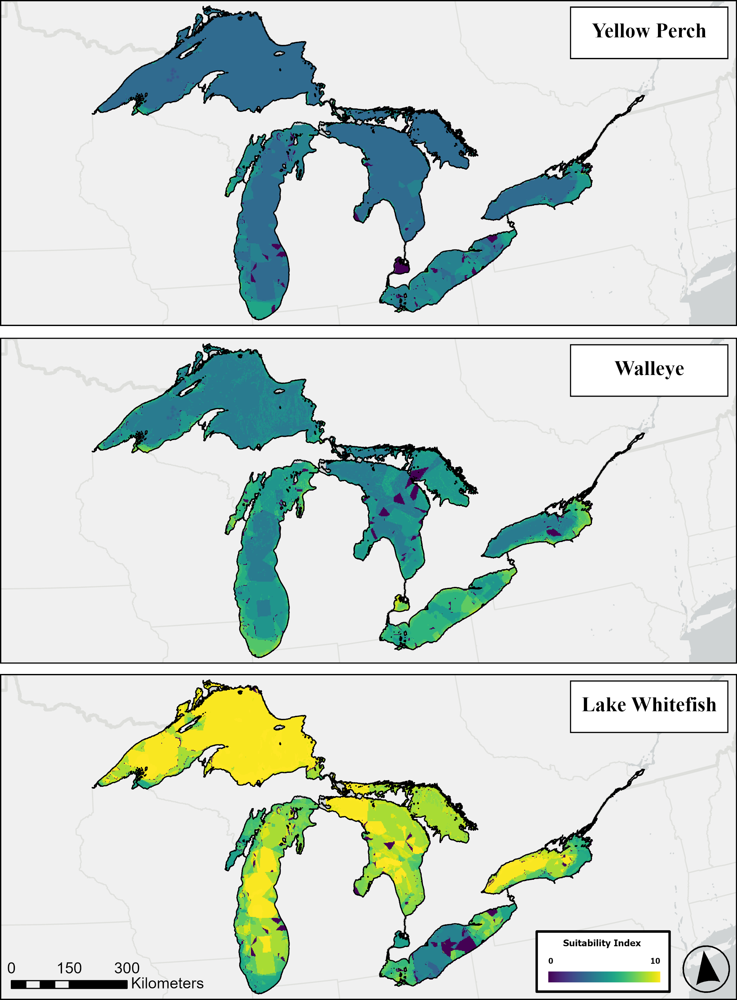
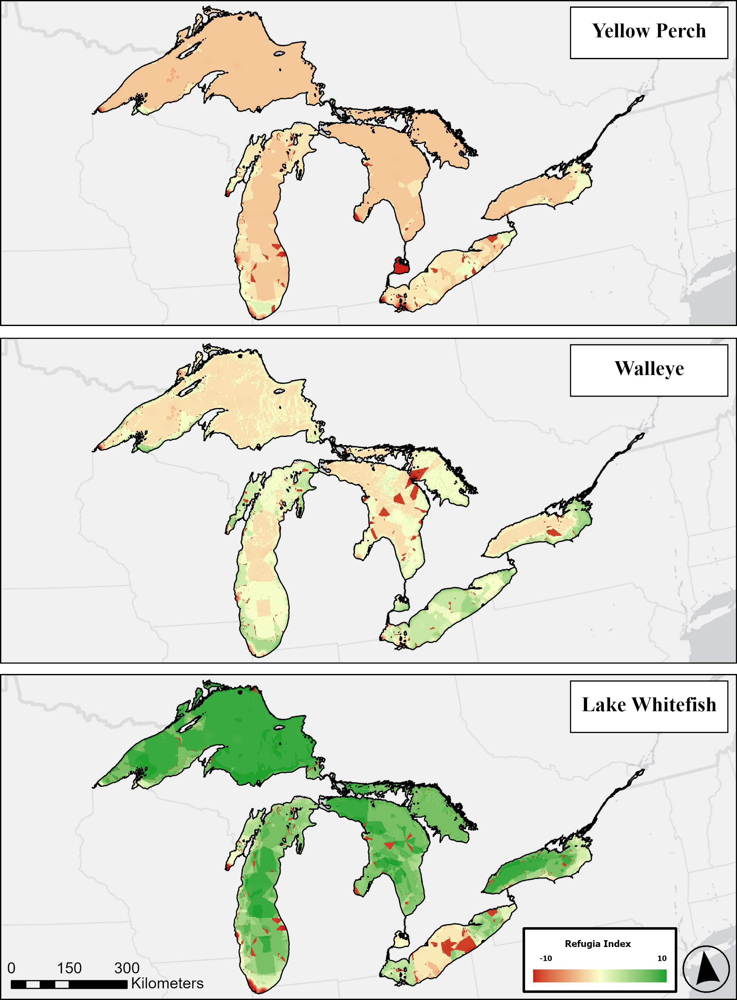
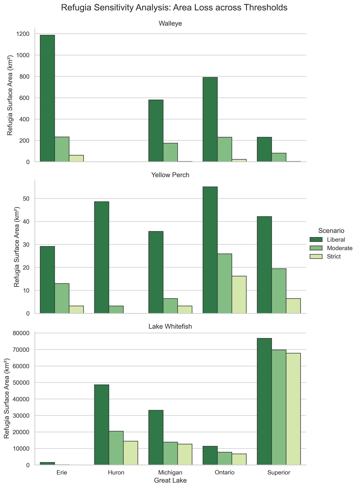
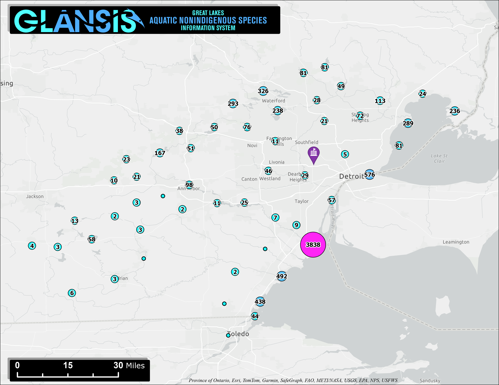
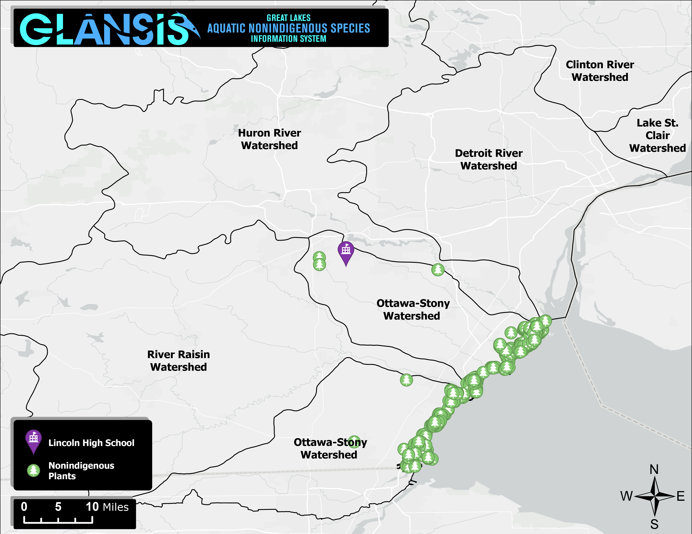
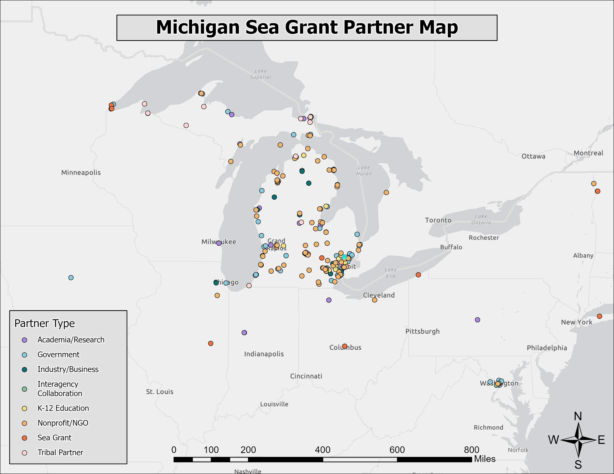

Hi, I'm Connor Shelly
GIS & Data Analytics Professional
View My Resume
GIS & Data Analytics Professional
View My ResumeGLANSIS, Michigan Sea Grant | Jan 2024 - Present
GLANSIS, Michigan Sea Grant | Jan 2023 - Jan 2024
Oregon State University | 2022
Specialization in Ecosystem Analytics.
UC Davis | 2021
Specialization Certification.
ArcGIS Suite Python R SQL HTML/CSS JavaScript
Analyzing how projected climate change and shifting thermal regimes alter the invasion risk profile of the Laurentian Great Lakes Basin.

Mapping species distribution risk changes by 2050 under altered thermal regimes.

Detailed mapping of the Great Lakes Basin boundary.

Basin boundary with continental context and inner watershed delineations.
An assessment of the threats aquatic invasive species pose to the restoration of Cisco in Lake Erie.
Spatial mapping, suitability indexing, and 10-year forecasting to identify and track critical habitat refugia against invasive species pressures.

Spatial impact scores mapped for Yellow Perch, Walleye, and Lake Whitefish.

Baseline suitability mapping comparing optimal environments.

Identification of critical habitat refugia.

10-year forecast comparing worst-case and constrained habitat loss.

Area loss tracking across Liberal, Moderate, and Strict thresholds.

Comparative analysis of potential habitat versus actual refugia.
Comparing observed species distributions against predictive Aquatic Ecological Unit (AEU) modeling and Nearest Neighbor spatial spread over time.

Correctly predicted AEU occurrences for Bythotrephes longimanus.

Nearest neighbor spread predictions.

Correctly predicted AEU occurrences for Corbicula fluminea.

Nearest neighbor spread predictions.

Correctly predicted AEU occurrences for Neogobius melanostomus.

Nearest neighbor spread predictions.

Correctly predicted AEU occurrences for Potamogeton crispus.

Nearest neighbor spread predictions.

Correctly predicted AEU occurrences for the VHS Virus.

Nearest neighbor spread predictions.
Evaluating historical introduction vectors, concentrated hot-spots, and the comprehensive demographic impact of the Top 10 invasive species across the basin.

Comprehensive mapping of aquatic invasive species occurrences.

Comparisons of all invasive species vs. the Top 10 by origin, taxa, and vector.

Histogram detailing frequency of specific impact scores.

Choropleth mapping of species introductions.

Map highlighting concentrated areas of introductions.

Tabular breakdown of the ten most impactful species.
Authoring scientific risk profiles to determine the introduction, establishment, and environmental/socio-economic impact potential of watchlist species.
Mapping localized nonindigenous species clusters to support community awareness and educational curriculum around the Detroit River and Ottawa-Stony watersheds.

Cluster analysis of species occurrences.

Distribution of aquatic nonindigenous species.

Distribution of nonindigenous plants near the school.
Translating complex ecological data into accessible, public-facing articles to drive awareness and community action in the Great Lakes.
Authored article outlining the threat of the parthenogenetic marbled crayfish to the Great Lakes ecosystem.
Read ArticleOutreach piece detailing the ecological impacts of ornamental release and responsible rehoming alternatives.
Read ArticleCall-to-action article recruiting participatory scientists to contribute to invasive mystery snail research.
Read ArticleSubject matter expertise provided for a Great Lakes Now feature on the discovery of marbled crayfish.
Read ArticleGeospatial tracking of organizational, academic, and government collaborations.

Distribution of Michigan Sea Grant partners.